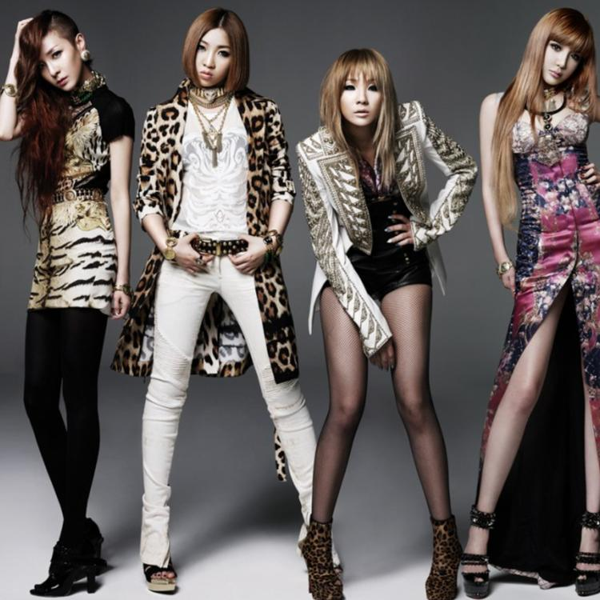

Volta às passarelas de Nova York em setembro
Ralph Lauren regressará à New York Fashion Week com um desfile em setembro, após quatro anos sem
participar na temporada oficial de desfiles da cidade.
Enquanto os clientes chineses ricos regressam em força às lojas, a Kenzo anuncia o seu primeiro
desfile no país. A maison parisiense, propriedade do grupo de luxo LVMH, dirigida no estilo pelo
japonês Nigo, vai desfilar com a sua coleção primavera-verão 2024, que acaba de ser apresentada em
Paris, em Xangai no dia 28 de julho.
Um desfile épico ao entardecer e uma coleção vital de Valentino diante de um dos edifícios mais
amados da França, o Château de Chantilly, compuseram o grande momento de moda da Semana da
Alta-Costura de Paris, que termina na noite de quinta-feira (6).
Para a Fashion Week feminina de setembro, dedicada às coleções para a primavera-verão 2024, Milão
apresenta um ótimo line-up, com 60 desfiles presenciais, em comparação com 54 em fevereiro passado.
De acordo com o calendário provisório, que acaba de ser divulgado, 10 novos nomes vão juntar-se à
semana, entre estreias e grandes reviravoltas, num programa pontuado por inúmeros destaques, como os
desfiles da Tom Ford, Gucci e Bally com os seus novos diretores criativos ou ainda com o desfile de
aniversário da Moschino.
Kim Jones, responsável pela construção da sua própria identidade como diretor criativo das coleções
masculinas da Dior em apenas cinco anos, o diretor criativo designado como o digno substituto de
Karl Lagerfeld ao leme das coleções femininas e de alta-costura da Fendi desde 2020 está
consolidando, coleção após coleção, a sua própria visão do luxo máximo, renovando os códigos
clássicos da herança da maison romana.

Sendo conhecidas como o grupo feminino mais relevante da segunda geração do KPOP e um dos principais
de toda a indústria, o 2NE1 trilhou muitos dos caminhos em que as novas gerações têm se apoiado. Com
acrônimo que significa nova evolução do século 21, as garotas fizeram jus a essas palavras,
literalmente atingindo números que eram inimagináveis para a época. Criado em 2009 pela YG
Entertainment, a estreia oficial de Bom, Dara, CL e Minzy ocorreu oficialmente após uma colaboração
de sucesso com o Big Bang, seus colegas de agência.
As roupas "esquisitas" que vemos em desfiles de moda são Obras de arte, todo
estilista é um artista e o tecido é sua matéria prima, então ele apresenta todo seu potencial
criativo, mostrando as peças incríveis que ele consegue fazer com o tecido. Semelhantes a um quadro
no museu, essas roupas são feitas para serem admiradas e não usadas.
As casas de moda soviéticas apresentavam regularmente novas coleções. Essas linhas eram mais tarde
colocadas em produção em massa, porém muitas vezes com grandes modificações nos designs originais.